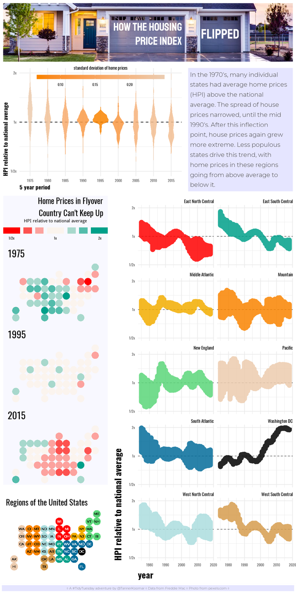
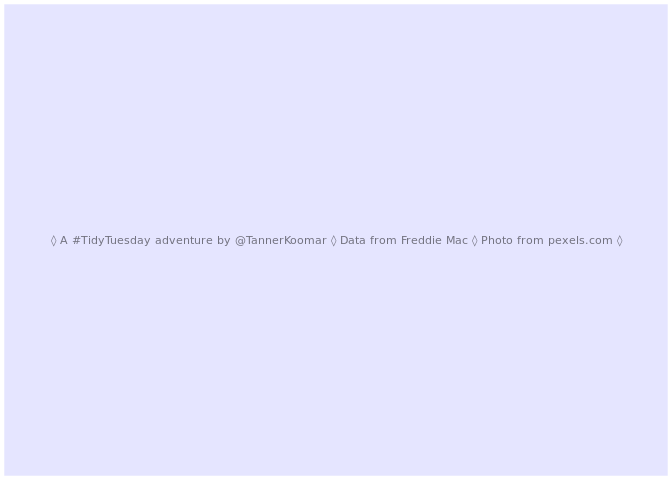

Tidy Tuesday: How The Housing Price Index Flipped

A look at housing price trends over the last century with a compound infographic.
library(tidyverse)
library(statebins)
library(cowplot)
library(magick)
library(showtext) ## for google fonts
font_add_google("Staatliches")
font_add_google("Oswald")
font_add_google("Montserrat", regular.wt = 300, bold.wt = 500)
showtext_auto()
## read in data
hpi_dat <- read_csv("https://github.com/rfordatascience/tidytuesday/raw/master/data/2019/2019-02-05/state_hpi.csvhttps://github.com/rfordatascience/tidytuesday/raw/master/data/2019/2019-02-05/state_hpi.csv")
## Parsed with column specification:
## cols(
## year = col_integer(),
## month = col_integer(),
## state = col_character(),
## price_index = col_double(),
## us_avg = col_double()
## )
format data
hpi_dat <- hpi_dat %>%
mutate(years = cut(year,
breaks = c(1975, 1980, 1985, 1990, 1995, 2000, 2005, 2010, 2015, 2018),
labels = c(1975, 1980, 1985, 1990, 1995, 2000, 2005, 2010, 2015),
include.lowest = TRUE
)
) %>%
group_by(years) %>%
mutate(
price_ratio = price_index/us_avg,
price_sd = sd(price_index/us_avg)
) %>%
ungroup() %>%
left_join(tibble(state = state.abb, region = as.character(state.division))) %>%
mutate(region = replace_na(region, "Washington DC"))
## Joining, by = "state"
A new theme
theme_house<- function(base_size = 11, base_family = "Oswald", base_line_size = base_size/22, base_rect_size = base_size/22) {
theme_minimal(base_size = base_size,
base_family = base_family,
base_line_size = base_line_size,
base_rect_size = base_rect_size) %+replace%
theme(axis.title = element_text(face = 'bold', hjust = 0, size = 14),
strip.text = element_text(hjust = 1))
}
violin plot
violin <- hpi_dat %>%
ggplot(aes(x = years, y = (price_ratio), fill = price_sd)) +
geom_hline(yintercept = 1 , lty = 2) +
geom_violin(color = NA, alpha = 0.85) +
scale_fill_gradientn(colors = c("#F98400","#ECCBAE"), name = 'standard deviation of home prices') +
labs(x = "5 year period",
y = "HPI relative to national average"
) +
guides(fill = guide_colorbar(title.position = "top",
title.hjust = 0.5,
label.position = 'bottom',
barwidth = 15,
barheight = .5)
) +
scale_y_continuous(trans = 'log2', breaks = c(1/2, 1, 2), labels = c("1/2x", "1x", "2x"), limits = c(1/2,2)) +
#scale_fill_viridis_c(direction = -1, option = "E") +
theme_house() +
theme(legend.direction = 'horizontal',
legend.justification = c(.5, 0),
legend.position = c(0.5, 0.78)
)
violin
## Warning: Removed 1 rows containing non-finite values (stat_ydensity).

statebin maps
bin_maps <- hpi_dat %>%
filter(years %in% c(1975, 1995, 2015)) %>%
ggplot(aes(state = state,
fill = cut(log2(price_ratio),
breaks = c(-Inf, -.625, -.375, -.125, .125, .375, .625, Inf), include.lowest = TRUE,
labels = c("-1", "-1/2", "-1/4", "0", "1/4", "1/2", "1")
)
)
) +
geom_statebins(border_size = 0, dark_lbl = NA, light_lbl = NA) +
facet_wrap(~years, nrow = 3) +
coord_equal() +
guides(fill = guide_legend(title.position = 'top',
title.hjust = 0.5,
label.position = 'bottom',
direction = 'horizontal',
nrow = 1,
keyheight = .75,
keywidth = c(2, 1, 1, 2, 1, 1, 2)
)
) +
scale_fill_manual(values = colorRampPalette(c("#FF0000", "#fbf4ee", "#00A08A"))(7),
name = "HPI relative to national average",
labels = c("1/2x", "", "", "1x", "", "", " 2x")) +
ggtitle("Home Prices in Flyover\nCountry Can't Keep Up") +
theme_void() +
theme(plot.title=element_text(family = "Oswald",
size=20,
hjust=1,
lineheight = 0.85),
plot.margin = margin(0,10,0,10),
strip.text = element_text(family = "Oswald",
size = 24,
hjust = 0),
legend.position = 'top',
legend.justification = 0.5,
legend.direction = 'horizontal',
legend.text = element_text(family = "Oswald")
)
bin_maps

line plots
lines <- hpi_dat %>%
group_by(year, region) %>%
ggplot(aes(x = year, y = price_ratio, color = region, group = region)) +
geom_hline(yintercept = 1, lty = 2, lwd = 0.25) +
scale_y_continuous(trans = 'log2', breaks = c(1/2, 1, 2), labels = c("1/2x", "1x", "2x"), limits = c(1/2,2)) +
labs(y = "HPI relative to national average") +
geom_line(alpha = 0.85, size = 4, show.legend = FALSE) +
facet_wrap(~region, ncol = 2) +
scale_color_manual(values = c("#FF0000", "#00A08A", "#F2AD00", "#F98400", "#5bd679", "#ECCBAE", "#046C9A", "#000000", "#ABDDDE", "#D69C4E" )) +
theme_house() +
theme(axis.title = element_text(size = 22))
lines
## Warning: Removed 1 rows containing missing values (geom_path).

map key
bin_map_key <- hpi_dat %>%
left_join(tibble(state = state.abb, region = state.division)) %>%
ggplot(aes(state = state, fill = region)) +
geom_statebins(border_size = 0, family = "Montserrat" ) +
scale_fill_manual(values = c("#FF0000", "#00A08A", "#F2AD00", "#F98400", "#5bd679", "#ECCBAE", "#046C9A", "#000000", "#ABDDDE", "#D69C4E")) +
coord_equal() +
ggtitle("Regions of the United States") +
theme_void() +
theme(plot.title=element_text(family = "Oswald", size=20, hjust=0),
plot.margin = margin(10,10,10,10),
legend.position = 'none'
)
## Joining, by = c("state", "region")
## Warning: Column `region` joining character vector and factor, coercing into
## character vector
bin_map_key

texts
title
header <- ggplot() +
annotate(geom = "text",
y = -0.1,
x = 0.5,
size = 10,
family = "Staatliches",
color = 'white',
alpha = 1,
lineheight = 0.7,
hjust = 1,
label="HOW THE HOUSING\nPRICE INDEX"
) +
annotate(geom = "text",
y = -0.1,
x = .79,
size = 12,
family = "Staatliches",
color = 'white',
alpha = 1,
lineheight = 0.9,
hjust = 0,
label="FLIPPED"
) +
ylim(-2,2) +
xlim(-2,2) +
theme_void() +
theme(
plot.background = element_rect(color = "white",
fill = "transparent",
size = 5)
)
ggdraw() + draw_image("house.png") + draw_plot(header)

narrative
narr <- ggplot() +
annotate(geom = "text",
y = 0,
x= -2,
size = 5.5,
family = "Montserrat",
color = 'black',
alpha = 0.75,
lineheight = 0.9,
hjust = 0,
label=str_wrap("In the 1970's, many individual states had average home prices (HPI) above the national average. The spread of house prices narrowed, until the mid 1990's. After this inflection point, house prices again grew more extreme. Less populous states drive this trend, with home prices in these regions going from above average to below it.", 30)
) +
ylim(-2,2) +
xlim(-2,2) +
theme_void() +
theme(
plot.background = element_rect(color = "white",
fill = '#e5e5ff',
size = 5)
)
narr

footer
foot <- ggplot() +
annotate(geom = "text",
y = 0,
x= 0,
size = 3,
family = "Montserrat",
color = 'black',
alpha = 0.5,
hjust = 0.5,
label= "◊ A #TidyTuesday adventure by @TannerKoomar ◊ Data from Freddie Mac ◊ Photo from pexels.com ◊"
) +
ylim(-2,2) +
xlim(-2,2) +
theme_void() +
theme(
plot.background = element_rect(color = "white",
fill = '#e5e5ff',
size = 3)
)
foot

Asemble
let’s try cowplot this time
final_plot <- plot_grid(
(ggdraw() + draw_image("house.png") + draw_plot(header)),
plot_grid(violin,
narr,
rel_widths = c(5,3)
),
plot_grid(
plot_grid(bin_maps + theme(plot.background = element_rect(fill = alpha('#e5e5ff', 0.25),
color = 'white',
size = 2)
),
bin_map_key,
ncol = 1,
rel_heights = c(3,1)
),
lines,
rel_widths = c(3, 5)
),
foot,
ncol = 1,
rel_heights = c(1, 2, 6, 0.15)
)
png("final_plot.png", width = 1000, height = 2000, res = 144, bg = "white")
final_plot
dev.off()
## png
## 2
The final Plot